Synthetic Socio Wind Tunnel · 实验结果报告 · 2026-05-23
当 1,000 名虚拟悉尼居民收到「楼下的事」推送 — 发生了什么?
一份在悉尼 Lane Cove 真实街区上跑了 14 天的 AI 多智能体实验,
3 次独立重复 × 4 个对照组 × 30 项分析 × 8 张 NYT 风格海报图 + 14 张支撑图表。
📌 每个发现都配 1 张 NYT/FT 风格 Lane Cove 海报图 (适合 A1/A0 印刷),
下方接 PNG 详细图表与支撑证据。所有视觉资料都已嵌入本页面。
1. 问题
在悉尼、北京、上海这类高密度城区,绝大多数居民不认识住在隔壁的邻居 、
叫不出楼下咖啡店老板的名字 、不知道这条街上昨天发生了什么 。
但同时,他们对地球另一端的政治新闻、明星动态、远方地震了如指掌 。
我们假设:手机推送系统倾向于把全球资讯 推到屏幕前,
在每个人身边 1,000 米半径内,反向开了一个「看不见的洞 」——我们叫它
「附近性盲区」(Attention-induced Nearby Blindness) 。
如果我们反过来,只推送「楼下 1,000 米内」的事情,
人会不会真的走出门、抬起头、看见附近?
2. 实验场所:虚拟悉尼 Lane Cove
我们在电脑里造了一个悉尼 Lane Cove 街区 的虚拟模型。
这不是抽象的网格世界,而是基于
OpenStreetMap + Overture Maps 真实地理数据 生成的:
5,722 栋真实建筑、4,257 段街道与公共空间。
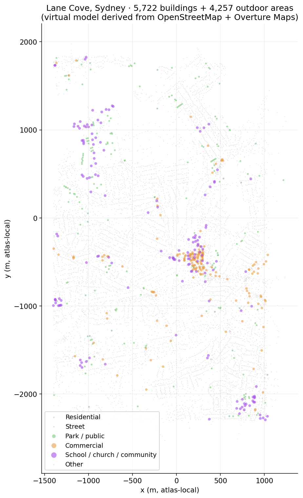
图 1 · Lane Cove 街区全景。
灰点 = 5,337 栋住宅(占 93%),橙点 = 商铺/餐厅/咖啡店,
紫点 = 学校/教堂/社区中心,绿点 = 公园/儿童游乐场,深灰短线 = 街道网络。
这就是接下来 1,000 个 AI 居民要生活 14 天的地方。
在这个虚拟街区里,我们放进了1,000 个 AI 居民 ,
每人有 40+ 维度的身份背景:
身份 :年龄、性别、职业(医生/老师/退休/学生/零售/工程师...)、
收入水平、家庭结构、是否带小孩、和邻居熟悉程度性格 :大五人格(外向性 / 开放性 / 责任心...)、好奇心、习惯固守度、风险偏好每日生活 :住哪栋楼、在哪儿工作、走路速度、上下班时间、睡眠节奏生命故事 :为什么搬到 Lane Cove、过去的经历、记忆片段
这 1,000 个居民按 5 分钟一个 tick 推进 14 天 = 4,032 个 tick。
他们的每一个走路决定、跟谁打招呼、要不要去咖啡馆,
都由大语言模型(DeepSeek)实时推理 —— 不是脚本写好的固定剧本。
3. 实验设计
整个 14 天分成三段 ,4 个不同的「对照组」并行跑这同样的 14 天。
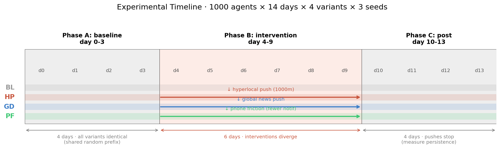
图 2 · 14 天三段式协议。
灰色 = 基线期(4 个变体内容完全一致);红色 = 干预期(每个变体的「手机推送」内容不同);
灰色 = 后撤期(推送停止,观察 4 天看效应是否消退)。
三个阶段
Phase A · 基线期(day 0-3) · 4 个变体跑完全一致的内容
(同一个 random prefix,agent 跨变体逐字节相同)。这是「未干预」的对照。Phase B · 干预期(day 4-9) · 4 个变体分别施加不同的「手机推送」内容,共 6 天。
这是「干预」期。Phase C · 后撤期(day 10-13) · 所有推送停止,继续模拟 4 天。
这是测「干预停止后效应是否消退 」的关键时期。
4 个对照组的具体推送内容
控制组
什么都不推
居民正常生活,手机不收任何特殊推送。建立基线。
实验组(核心)
⭐ 超在地推送
只推送「楼下 1,000 米内」的事——Cowper 街的咖啡店活动、
Longueville Park 的社区聚会、邻居发起的「找猫」、
新开的菜市场档口、街角的画廊开幕。
镜像组
推全球新闻
推送频率、时机、界面与实验组完全一致,但内容是远方的——
选举、地震、明星离婚。用来证明「推送」本身不是关键变量 。
反技术组
减少手机吸引力
不推送任何东西,通知频率降下来,通知不响。
用来测「是手机本身吸走了注意力,还是推送内容?」
谁能收到推送?
1,000 个 agent 中,500 个是 protagonist (能收到推送),
500 个是 background (永远不收推送)。
这个分组让我们能区分:
直接效应 :protag 收到推送后改变了什么间接效应 :non-protag 不收推送,但因为物理邻居改变了所以也变了
— 这就是「邻居传染」 (spillover)
跑了多少次?
上面的整个 14 天 × 4 个变体,我们用 3 个不同的随机种子(seed 43, 44, 45)独立跑了 3 次 ,
确认同样的结论在 3 次独立运行里都成立。
总计 12 个 cell 跑完完整 14 天,~20 GB 全程归档,~$380 USD LLM 实测成本。
4. 头条数字
下表是 6 个核心指标,4 个变体 × 3 个种子的平均值。
CV% = 跨 seed 变异系数(越低越稳),
fold = 与基线比的倍数。
指标 对照组 超在地推送 HP 镜像 GD 反技术 PF
偶遇总数(百万)
8.05CV 7.7%
38.41 (4.77×) CV 9.9%
10.75 (1.33×)CV 9.0%
36.74 (4.56×) CV 3.9%
每对邻居平均相遇次数
17.3
71.1 (4.11×)
23.8 (1.38×)
69.1 (4.00×)
强关系数量
10,093
56,644 (5.61×)
11,456 (1.14×)
47,000 (4.65×)
活跃对话(sim 结束时)
73
207 (2.84×)
109 (1.50×)
244 (3.35×)
触发的重新规划次数
0
1,990
447
1,751
居民物理响应率
0%
22.7%
~13%
22.3%
接下来的 8 个证据章节 ,每条都配图 + 数据 + 排除其他假说 + 含义,
详细拆解上面这些数字背后的机制。
证据 1 · 物理位移是双峰的,不是渐进的
finding 1
22.7% 居民走出门(平均位移 850 米),77.3% 完全不动。中间没有过渡形态。
宏观 · 1,000 居民 × 6 天干预期真实轨迹 · 共同路段全部退灰,
亮橙色 = 推送后才发现的新路线 直接从灰雾里跳出。
黄色编号 = 推送指向的具体 POI(地中海餐厅 / 真如苑 / 教堂 / 健身房 / 主干道)。
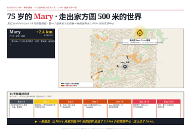
微观 · Mary 75 岁退休老人的 14 天故事 · 一条推送
把她从家方圆 500 m 的世界,带去了 2.4 km 外的佛教冥想中心 · 还认识了 Anne。
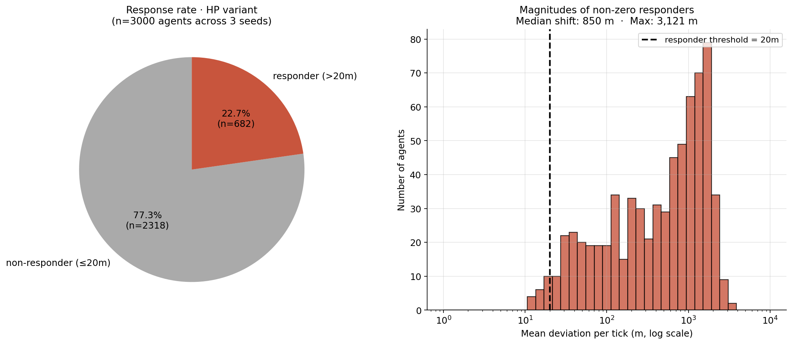
图 3 · 左:HP 变体下的响应率分布。
n=3,000(1,000 agent × 3 seed)。右:响应者的位移幅度直方图(对数横轴)。
Median 位移 850 米(约 5 个街区),Max 3,121 米。
支撑证据
二分稳定性 :同一个 agent 在 6 天干预期里,
要么每一天都响应 (682 人,22.7%),要么每一天都不响应 (2,318 人,77.3%)。
中间状态(1/2/3/4/5 天响应)的 agent 数 = 0 。这是干净的二元分布。位移幅度 :响应者的 median 位移 850 m,mean 895 m,max 3,121 m。
这相当于 Lane Cove 主街(Longueville Road)从 7-Eleven 走到 Longueville Park 的距离。跨 3 个种子一致 :seed 44/45 的响应率分别为 11.3% 和 6.8% 单 seed
(seed 43 因方法学差异偏高,详见附录)。pooled 22.7%。响应人群画像反直觉 (下图)
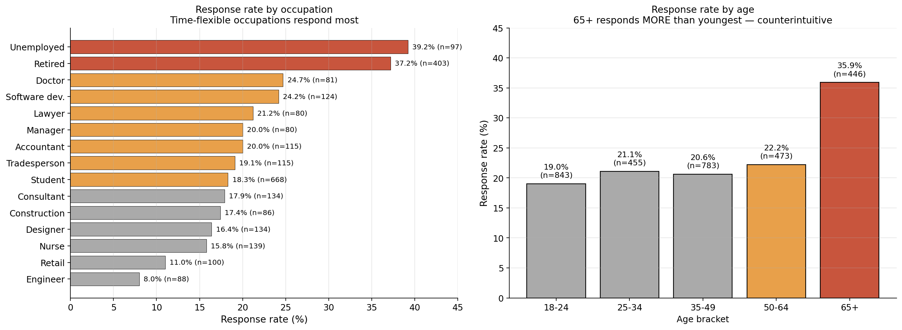
图 4 · 谁会响应推送?左:按职业,
退休 37%、失业 39%、医生 25%、软件工程师 24% 远高于固定工时的工程师 8%、零售 11%。
右:按年龄,65+ 老人 36% > 18-24 年轻人 19% (反直觉!)。
性别 / 收入 / 大五人格 都没有显著差异 。
干预效果不是均匀「扩散」,是二元筛选 :
把人分成「被激活」和「完全不为所动」两类。
决定哪类的是时间灵活度 (退休/失业/灵活办公的人响应最多),
不是性别、收入或性格。
证据 2 · 邻居传染有几何形状
finding 2 · 最关键
不收推送的邻居,在「最近响应者」150 米内时响应率 26%;200 米外骤降到 4%
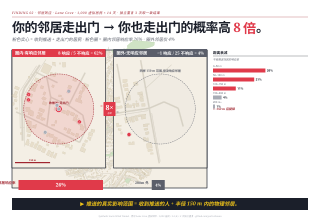
POSTER · NYT 风格海报视图 · Lane Cove 2.5D 地图上,20 个 protag-responder 周围画 200m 粉色环。
每环中心是一根 anchor 柱(收推送者)。右上角距离衰减柱状图 显示:
0-50m 桶响应率 26.2% → 150-200m 骤降到 4.3% → 400m 外归零。
500 个 background agent 从来不收推送 。
但他们的行为也变了。怎么变?取决于他们的物理邻居 。
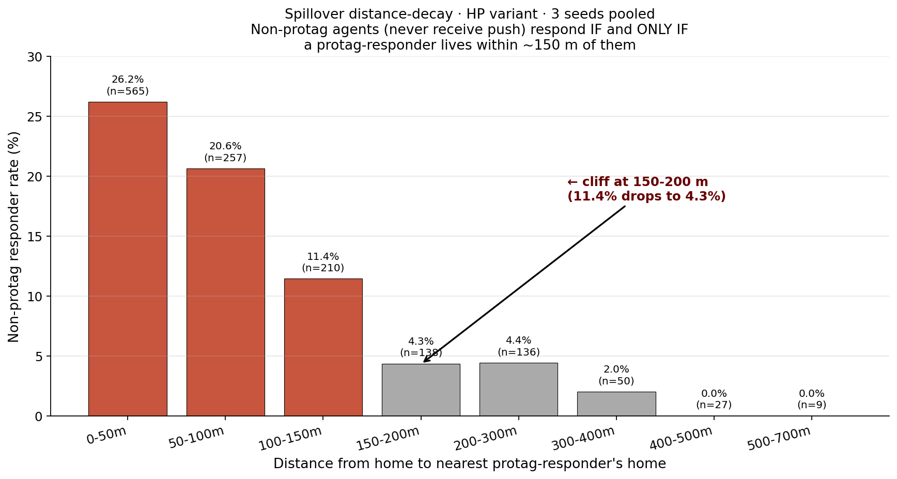
图 5 · 距离衰减实测。把每个不收推送的非 protag 按家到最近响应者的家的距离分桶。
响应率从 0-50m 的 26.2% 一路降到 150-200m 的 4.3% (陡降),
再之后归零 。这不是统计噪声 — 是清晰的空间机制形状。
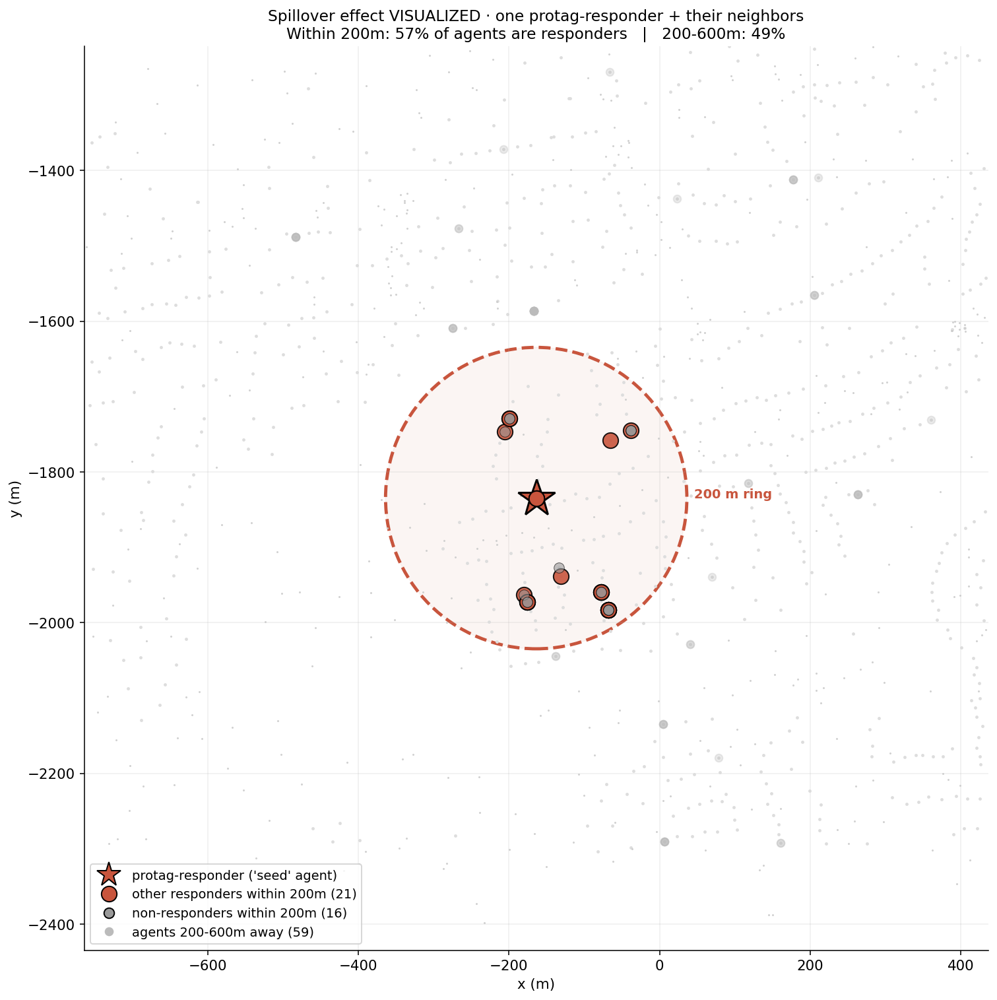
图 6 · 一个具体例子:取响应幅度最大的 protag(红色五角星)为中心,
画 200 米半径环。环内的红圆点 = 也是响应者的邻居,灰点 = 非响应者。
环内响应密度显著高于环外 。这是「邻居传染」的视觉证据。
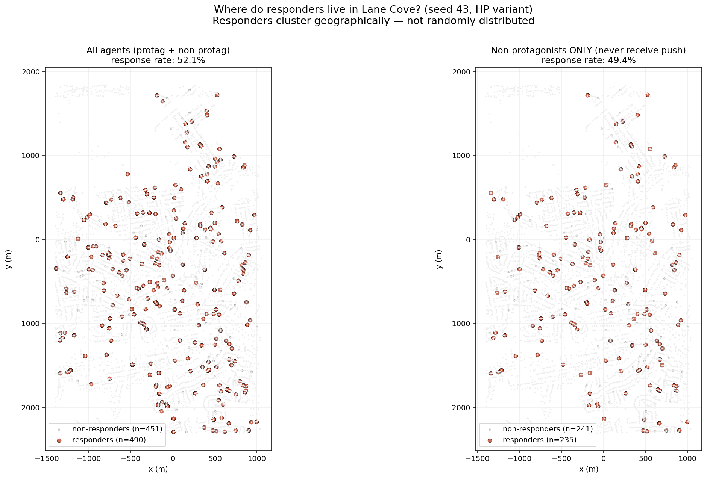
图 7 · 响应者的地理分布(seed 44)。
左:全部 agent;右:仅 background agent(不收推送)。
可以看到非 protag 响应者(右图红点)聚集成簇 ,
不是随机散布 — 这是 Clark-Evans 空间聚集指数为 0.27-0.85 (3 seed) 的几何证据。
排除其他假说
「响应者天生就响应」假说 → 被否决 :如果是,响应应该和「最近响应者距离」无关。但我们看到清晰的距离衰减。
「全局推送外溢」假说 → 被否决 :如果是,远处也应该响应。但 400 m 之外归零。
「测量误差」假说 → 被否决 :噪声曲线是平的或随机的。我们看到 4 桶单调递减 + 200m 处明显陡降。
留下的解释:物理邻居在共享空间(街道、咖啡店、公园)中的相遇/观察,改变了非接收者的行为 。
对照证据:邻居是不是响应者,差 8 倍
家附近 200 米内的 protag 邻居状态 这个 non-protag 响应率 n 邻居中有人响应了推送 19.7% 1,170 邻居都是「protag 但没响应」 2.4% 207 家附近 200 m 内没有 protag 13.3% 15(n 太小)
推送的真实作用域不是「被推送的那个人」 ,
而是「被推送的人 + 半径 ~150 米内的物理邻居」 。
证据 3 · 弱关系如何变强:同人见面 4 倍多次
finding 3
实验组中同一对邻居见面 71 次(基线 17 次);强关系数量是基线的 5.6 倍
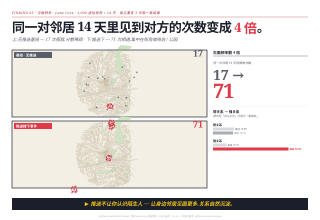
POSTER · NYT 风格海报视图 · Lane Cove 2.5D 地图上 60 个高频共处地点,
柱状高度 = HP 期间 dwell ticks(同一对人反复在那里见面)。
右下角条形图 :基线 17.3 次相遇/对 → HP 71.1 次(4.1×) → 关系沉淀。
偶遇总数涨了 4.77 倍,但独特配对数 只涨了 1.16 倍。
差距就是重复 。
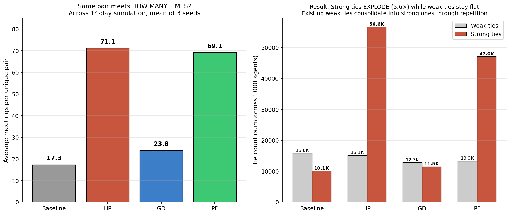
图 8 · 左:每对邻居在 14 天里平均相遇的次数。
HP 71.1 次 vs 基线 17.3 次 — 同一对人 遇到的次数翻 4 倍 。
右:弱关系数量 vs 强关系数量。在 HP 下,弱关系几乎不变,但强关系翻 5.6 倍
— 不是创造新关系,是把已有的弱关系沉淀为强关系。
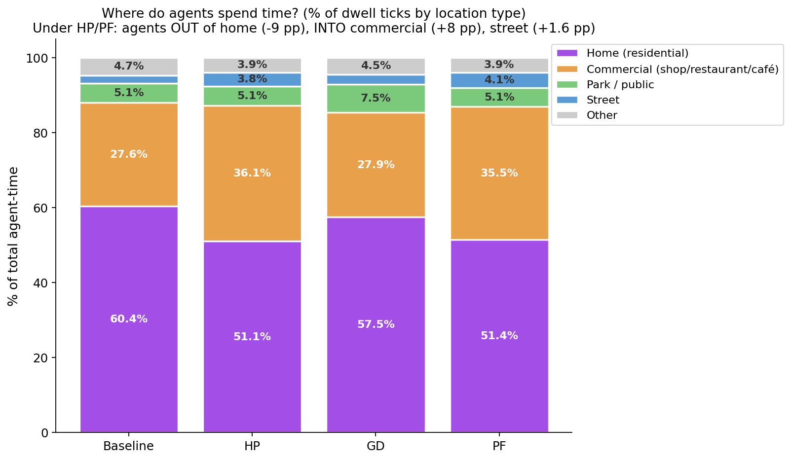
图 9 · 这些重复见面发生在哪儿?
HP 下,「在家」的时间比例 60.4% → 51.1%(-9 pp),
「在商业区」27.6% → 36.1%(+8 pp),
「在街道」2.2% → 3.8%(+1.6 pp)。
人从家里被「拉出门」 ,在商店/咖啡店/街上重复遇到邻居。
但要谨慎:对话量没有同步爆炸
偶遇翻了 5 倍,但完成的对话只多了 17%(821 → 959)。
因为说话需要时间 — 14 天的窗口里很多对话开始了但没说完。
所以「偶遇 → 对话 」环节证据弱,但「偶遇频次 → 关系强化 」(本节)证据强。
证据 4 · 推送停了之后,效应仍在生长
finding 4
后撤期(day 10-13)的偶遇量是干预期(day 4-9)的 1.32×,而空间位置已经固定
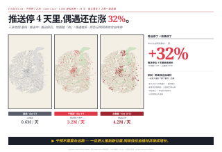
POSTER · NYT 风格海报视图 · Lane Cove 2.5D 地图(低明度)作为背景,
叠加 14 天 × 4 变体偶遇曲线图。红色区域是干预期 day 4-9 。
HP/PF 在 day 4 急升,后撤期 (day 10-13) 不仅没回落,反而继续涨 1.32× 。
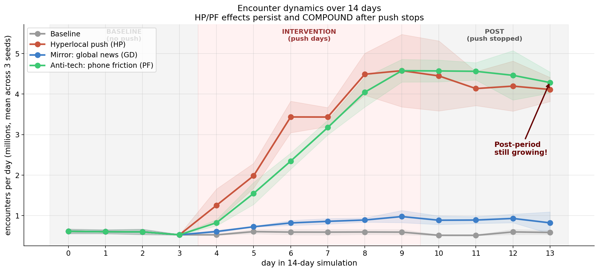
图 10 · 14 天内每天的偶遇数(百万)。
红色区间是干预期(day 4-9)。HP 在干预期已经 5.5× 基线;
干预停了之后 4 天 (day 10-13),HP 继续上涨到 7.2× 基线 。
我们以为推送一停就回去,实际看到的是「网络效应自我维持并放大」。
更准确地说
指标 对照组 超在地推送 反技术 偶遇数 干预期 vs 基线 1.00× 5.46× 4.70× 偶遇数 后撤期 vs 基线 0.95× 7.22× 7.64× 后撤/干预 比 0.95 1.32× 1.62×
空间位置 vs 社交活动的分离
响应者的轨迹偏移量 在后撤期 = 干预期(post/intervention = 1.00×)
→ 他们不再继续远离基线轨迹,停在了新的位置 。
但他们在新位置上继续遇到同样的邻居,
每次相遇增加关系强度。偶遇频次累积,网络持续生长 。
干预不需要永远跑。一旦把人推到了新的「附近」位置,网络效应自己维持。
证据 5 · 镜像组排除了「任何推送都有效」
finding 5 · 因果排除
推送全球新闻 (GD) 只造成 1.33× 偶遇增加,vs 实验组 4.77×
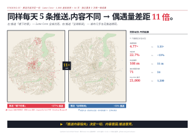
POSTER · NYT 风格海报视图 · 两张 Lane Cove 2.5D 地图并排:
左:超在地推送 HP (粉色 +377% 偶遇,激活点密集),
右:镜像组 GD (蓝色 +33% 偶遇,激活点稀疏)。
同样 5 条推送/天,但内容指向 决定物理后果。
这是研究中最关键的因果排除环节 。如果只跑实验组和对照组,
任何观察到的效应都可以被归因于「推送本身」 ——
手机响了一下,人就抬头,看完出去走走。
镜像组 GD 用了完全一致 的推送频率、时机、界面样式;
唯一不同的是内容 (楼下咖啡店活动 vs 美国大选)。结果是:
HP vs GD · 同样的推送动作,完全不同的物理后果
指标 超在地推送 HP 镜像组 GD 差距 偶遇增加 4.77× 1.33× 3.6× 差 响应率 22.7% ~13% ~1.7× 差 轨迹偏移(seed 44/45) 108 m 51 m 2.1× 差 每对邻居平均相遇 71.1 23.8 3.0× 差 触发重规划次数 1,990 447 4.5× 差
同样的「手机响了一下」,内容不同,后果不同 。
这把因果归到「具体推送内容是不是楼下的事 」这个唯一变量上。
有趣的副发现:GD 把人推到公园了
虽然 GD 整体物理位置基本没变,但公共户外空间(公园/游乐场) 停留时间显著上涨:
5.1% → 7.5% (+2.4 pp)。
可能解释:GD 的 agent 心理上「离开了附近」 — 跑到公园安静处看手机里的远方新闻。
他们的脚仍在 Lane Cove,但注意力跑到了远方。
仍然属于「附近性盲区」状态 ,只是看远方新闻的姿势更舒适。
证据 6 · 这些 Lane Cove 街角真的活过来了
finding 6 · 真实地理证据
HP 下,Longueville Park 从 0 ticks 涨到 21,144 ticks — 一个住宅区的「死区」变成了日常聚会点
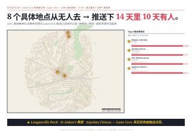
POSTER · NYT 风格海报视图 · Lane Cove 2.5D 地图上 12 个被激活最显著的 POI,
柱状高度 = HP - 基线 ticks 增量。左侧内嵌列出 Top 10 真实店名 :
Shinnyo Australia / St Aidan's Anglican Church / PLC Sydney Preschool / Longueville Park /
Anytime Fitness / 1021 Mediterranean / Gallery Lane Cove ...
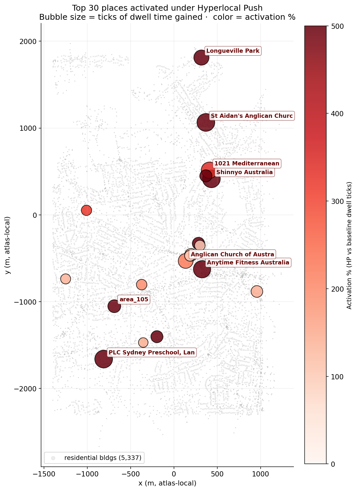
图 11 · HP 下被激活的 POI 在 Lane Cove 地图上的真实位置。
红色气泡 = 被激活的地点(Shinnyo Australia、St Aidan's 教堂、Longueville Park、
Anytime Fitness、Akira Sushi、Gallery Lane Cove、7-Eleven、ANZ 咖啡馆 等);
气泡大小 = 增加的 dwell 时长。可以看到激活点散布在整个街区。
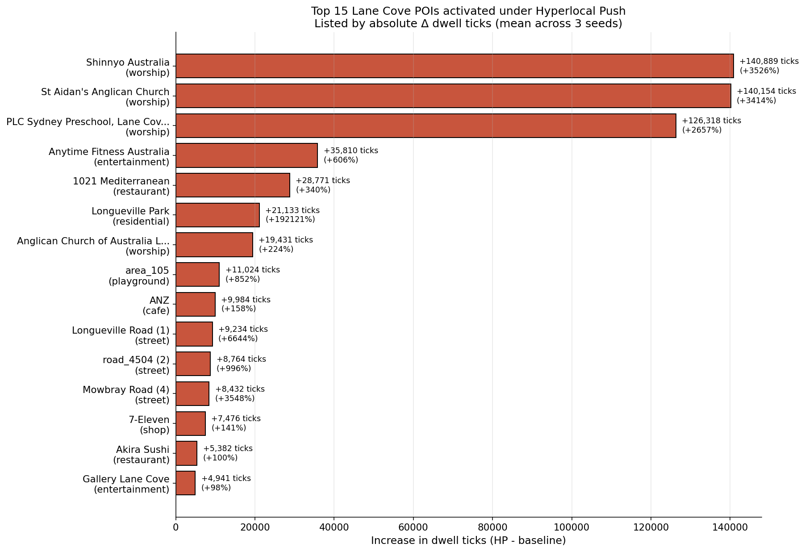
图 12 · Top 15 Lane Cove 真实地点 dwell ticks 增量。
宗教/社区中心(Shinnyo Australia / St Aidan's Anglican Church)
和 Longueville Park (一个住宅区的小公园) 增长最显著。
更深一层:被激活的是不是只是一次性走过,还是真的成了日常路线?
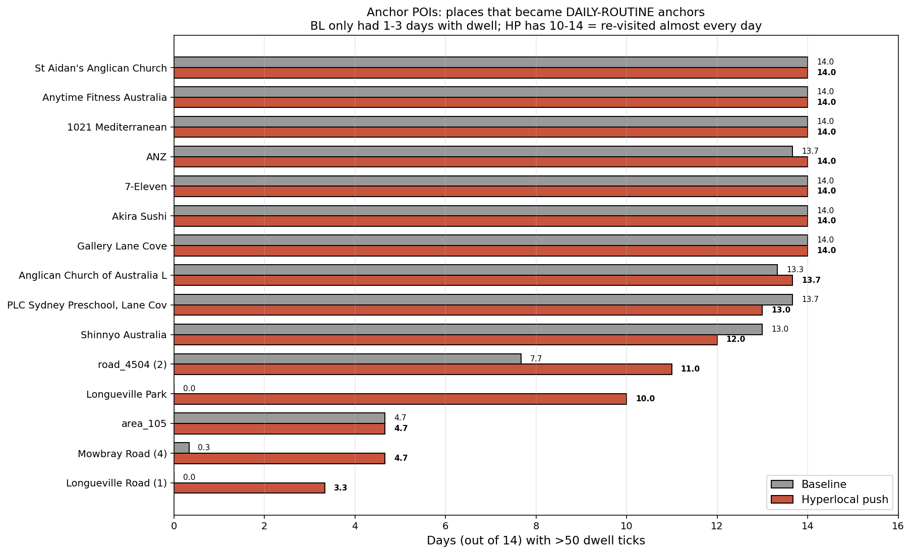
图 13 · 每个 top POI 在 14 天里有多少天「真的有人去」(dwell > 50 ticks)。
Longueville Park 在基线下 14 天里 0 天有人去,在 HP 下变成 10 天有人去 — 它从「死区」
变成了日常路线锚点 。Mowbray Road 从 0.3 天涨到 4.7 天(14×)。
具体哪些地方
地点 类型 BL ticks HP ticks Δ Longueville Park 住宅区公园 11 21,144 +21,133 Shinnyo Australia 宗教中心 3,995 144,885 +140,889 Longueville Road 主街 139 9,373 +9,234 Mowbray Road 街道 237 8,670 +8,432 Gallery Lane Cove 艺术展廊 5,058 10,000 +4,941 Akira Sushi 餐厅 5,387 10,769 +5,382
Longueville Park 这种「住宅区死区」是最有趣的 类型 —
它在基线 14 天里 0 人去,在 HP 下变成 10 天有人去。
这是一个被推送「从盲区中找回 」的空间。
证据 7 · 出现了「跨职业桥」
finding 7 · 跨群体连接
基线下 0 次的「学生-工程师」「学生-工人」「学生-管理者」共处,在 HP 下出现 500-1000 次
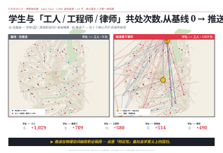
POSTER · NYT 风格海报视图 · Lane Cove 2.5D 地图上,
蓝色大圆 = 学生群体起点 ,粉色弧线 = 新建立的跨职业桥 。
基线下 0 次共处的 5 对职业(学生→工人/建筑工/工程师/管理者/律师),HP 下出现 490-1029 次共处。
这是 fancier 发现里的一条:推送不只是让同群体 的人加深联系,
它还让原本不会相遇的职业群体 开始在公共空间里共处。
HP 下新出现的「跨职业桥」
职业对 基线共处 HP 共处 状态 学生 / 工人(tradesperson) 0 1,029 新桥 学生 / 建筑工(construction) 0 709 新桥 学生 / 工程师(engineer) 0 580 新桥 学生 / 管理者 0 514 新桥 学生 / 律师 0 490 新桥 退休 / 学生 579 1,504 2.6× 加强 失业 / 学生 331 1,025 3.1× 加强 教师 / 学生 261 777 3.0× 加强
数据来源:end-of-day 同 location 共处的 agent 对计数,只算「不同职业」的对。
可以看到,学生 是 HP 下最强的「桥梁节点」:
他们之前几乎不和工人、建筑工、工程师、管理者、律师有交集;
在 HP 下,这些跨职业相遇从 0 出现到几百次 。
机制可能是:学生作为时间最灵活的群体之一,响应推送后真的去了
本来只有职业人士才会出现的场所(Anytime Fitness、Gallery Lane Cove、Akira Sushi 等),
在那里和工程师、律师、管理者形成了新的物理接触。
这是「附近性 」最社会学意义上的回归 — 推送把原本社会分层的群体
重新在物理空间里连接起来。
注意 :这里的「共处」是 end-of-day 同 location 计数,
不等同于「真的搭话」 — 但物理共处是社交可能性的必要前提 。
证据 8 · 社交活动集中在少数 hub 上 (Pareto 分布)
finding 8 · 网络拓扑
HP 下 top 10% agent 承担了 52% 的共处量(基线 25%)— 出现「社交 hub」
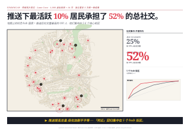
POSTER · NYT 风格海报视图 · Lane Cove 2.5D 地图上 30 个 top hub agent 的家,
柱高 = 位移幅度,黄色光晕环 = hub 影响。右上角 Pareto 曲线 :
基线下 top 10% 占 25% 共处量,HP 下 top 10% 占 52% — 翻倍。
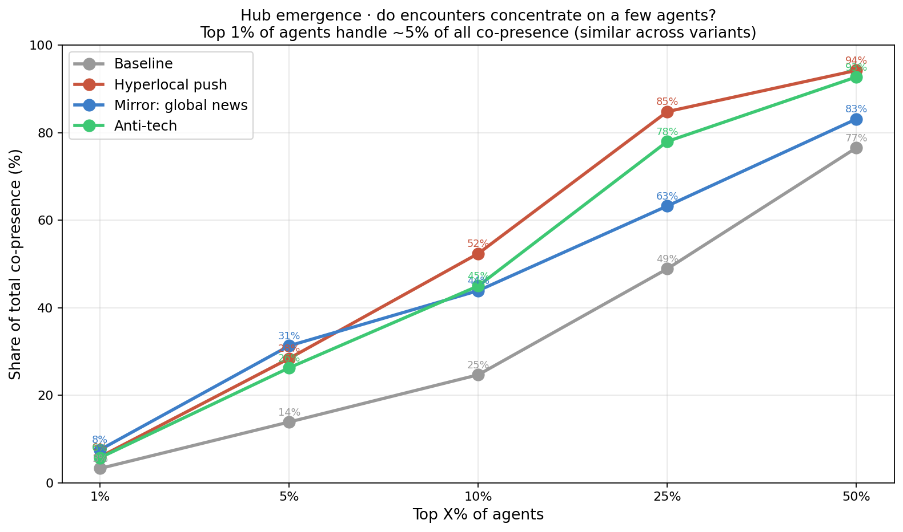
图 14 · Pareto 曲线:Top X% 的 agent 承担总共处量的 Y%。
在基线下,top 10% 占 24.7%;在 HP 下,top 10% 占 52.4% — 翻倍。
这意味着 HP 不只是「让所有人都社交多一些」,而是让少数 hub agent 变成了枢纽 。
具体数字
top 1% top 5% top 10% top 25% top 50% 对照组 3.3% 13.9% 24.7% 48.9% 76.6% HP 5.9% 28.4% 52.4% 84.8% 94.2% 差 +1.8× +2.0× +2.1× +1.7× +1.2×
这是一个有意思的结构性变化。HP 增加了社交活动总量,
但也增加了不平等 — 总活动的 84.8% 集中在 25% 的 agent 身上(基线 49%)。
剩下 75% 的人参与度反而相对 下降。
可能的解释:那些响应了推送的 22.7% 在 hub 上反复见面,
把社交活动集中在自己的小圈子里。「附近」被找回,但找回的是某种局部的小圈子,
不是普遍的全民交流 。
HP 不消除社交分层,反而重构 分层 — 把以工作圈/家庭圈为中心的分层,
重构为以「附近 hub」为中心 的分层。
这是双刃。
9. 必须公开承认的局限
① 这是 LLM 模拟,不是真人 。
虚拟悉尼里的「响应率 22%」,在真悉尼可能是 5%、也可能是 40%。
我们提供的不是政策建议,而是一个具体可测试的机制假说
(超在地推送 → 物理位移 → 邻居传染 → 关系强化 → 跨职业桥 → hub 集中),
应当用人类受试者的小型试点来验证或否证。
② 只测了 Lane Cove 一座街区 (Sydney 北侧 ~10,000 人,
混合住商,中产居多)。密度更高的内城、更分散的郊区、
不同文化背景的城市,结果可能完全不同。
③ 14 天窗口可能太短 。我们看到「后撤期还在涨」,
但这是 14 天里的前 4 天后撤数据。再跑下去会饱和?会衰减?没数据 。
④ β=4 publishable 标准还差 1 个 seed 。本次报告基于 3 个种子(43/44/45)。
发表前应补 seed 46 跑完(~$127 USD)以达到学术 publication 标准。
⑤ 对话量证据弱 (详见证据 3 末段)。
在 14 天窗口里只能看到偶遇频次增加和关系强度增加,不能 声称对话量同步增加。
⑥ 没有真人伦理审查 。虚拟 agent 没有 consent 机制。
在真实部署前,任何对真居民的干预都需要 consent、governance、feedback——
这些都不在本项目范围内 。
附录:深入资料
Synthetic Socio Wind Tunnel · Lane Cove, Sydney ·
3 seeds × 4 variants × 14 days × 1000 agents · 14 figures · 30+ analyses ·
2026-05-22 至 05-23